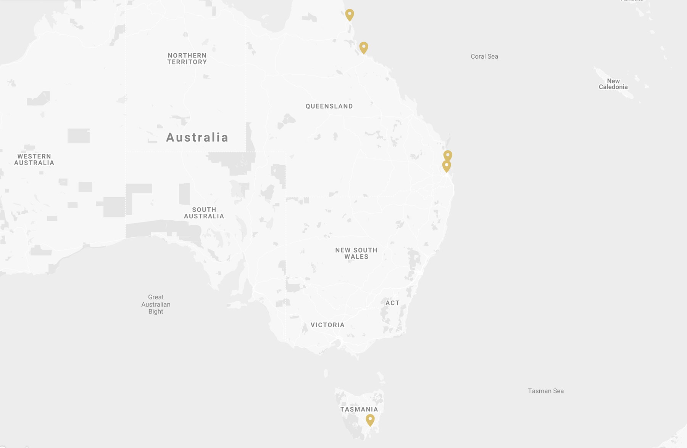

One team,from Cairns to Hobart.
For 25 years Watermark Constructions has serviced Queensland and Tasmania, with the infrastructure in place to deliver quality building and consultative services right across Australia.
Metropolitan and regional, with no gaps in between.
We service both metropolitan and regional areas to provide a reach of support that exceeds our competitors. Our capacity to deploy resources on short notice, to any location in Queensland, has seen us embedded in communities affected by cyclone, flood and hail from Cairns to the Gold Coast.
In every catastrophe event we take part in, we employ local contractors we've worked with for years. It grows our regional footprint, keeps work in the community and means we can resource multiple regions at once without compromising on quality.

Seven offices, three states.
Brisbane
95 Samford Road
Alderley QLD 4051
Cairns
The Bolands Centre, 14 Spence Street
Cairns QLD 4870
Townsville
93 Perkins Street
South Townsville QLD 4810
Yeppoon
58 Dolphin Crescent
Yeppoon QLD 4703
Sydney
Level 22, Westfield Tower 2, 101 Grafton Street
Bondi Junction NSW 2022
Hobart
35 Burnett Street
North Hobart TAS 7000
On the ground within 48 hours.
When catastrophe hits, speed matters. Our crews are structured to mobilise from the nearest base, set up a local operation and begin make safe and assessment works while the recovery plan takes shape.
Make Safe response
365 days a year, thousands completed.
Mobilisation
Crews on the ground after Cyclone Debbie.
Properties repaired
For insurers since 2000.